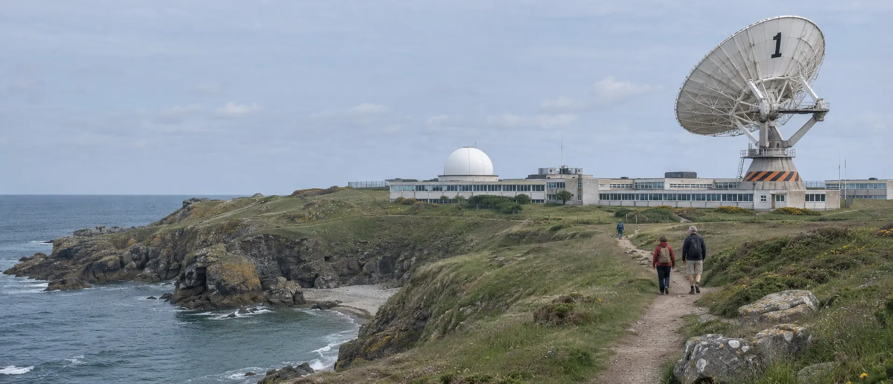

Plan a visit to Carrick Head

From the coast path, 400 m west of the gateCarrick Head, near Coverack
Open six days, late on four
Entry covers the control room, the dish walk, the dish session at 12:15 and one planetarium show. Pay at the gate or in advance; members come in free.
Last entry an hour before closing. Open bank holiday Mondays and every day of school holidays in Cornwall.
- Adult17 and over£12
- ConcessionStudents, over 65s, carers go free£9
- Child5 to 16; under 5s free£7
- FamilyTwo adults and up to three children£32
- Observing nightAdult £15, child £8; moves if it clouds over£15
- MembersObserver members get observing nights free tooFree
End of the road, edge of the cliff
The station sits on the headland south of Coverack, signed from the B3293 at the Goonhilly crossroads. Free car park, 40 spaces.
- Leave Helston on the A3083 towards the Lizard.
- Take the B3293 east past the Goonhilly crossroads.
- Follow the brown dish signs through Coverack; the lane to the head is single track.
- Start at the harbour, where the bus from Helston stops.
- Climb the lane south out of the village.
- The gate is on your left as the dish comes into view.
Keep it dark
Your eyes take twenty minutes to adapt and one white torch to undo. Try the page in red-light mode, the way the observing field sees it.
- 01Dip at the gate
Sidelights only from the cattle grid to the car park. A marshal with a red wand will wave you in.
- 02Red light only
Red torches are free at the gate; tape over the white one on your phone or turn the screen to night mode.
- 03No flash
Not even of the dish. Long exposures on a tripod are welcome: ask a volunteer where to stand.
- 04Give it twenty
Twenty minutes in the dark before you judge what you can see. The Milky Way arrives slowly, then all at once.
- 05Dress for wind
It is always colder on the head than in Coverack. Hats, gloves, and boots for the wet grass.
- 06Mind the edge
The field ends in a fence and then a cliff. Stay inside the rope line, and keep children within reach.
Access and facilities
Halls, dome and control room are level. The dish walk is a firm gravel path; the pedestal climb is ladders only.
Our café in the old canteen: pasties, soup and tea until 30 minutes before closing.
Welcome on leads outside. Assistance dogs welcome everywhere, including the dome.
First Saturday of the month, 10:00 to 11:00: sound down, lights up, fewer people.